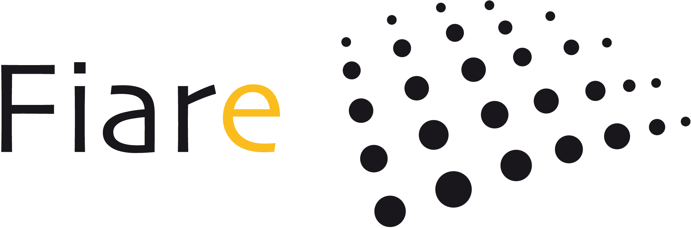
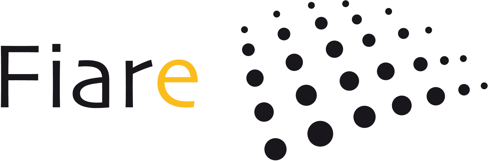

Razones para hacerse socio,para abrir un depósito, pasos para hacer socio, ventajas de ser socio, etc...
Esta presentación está dirigida a todos las personas interesadas en FIARE.
Para más información pueden ponerse en contacto con cualquiera de los grupos locales de FIARE mapa
Puede descargar la presentación en PDF o en formato abierto LibreOffice.